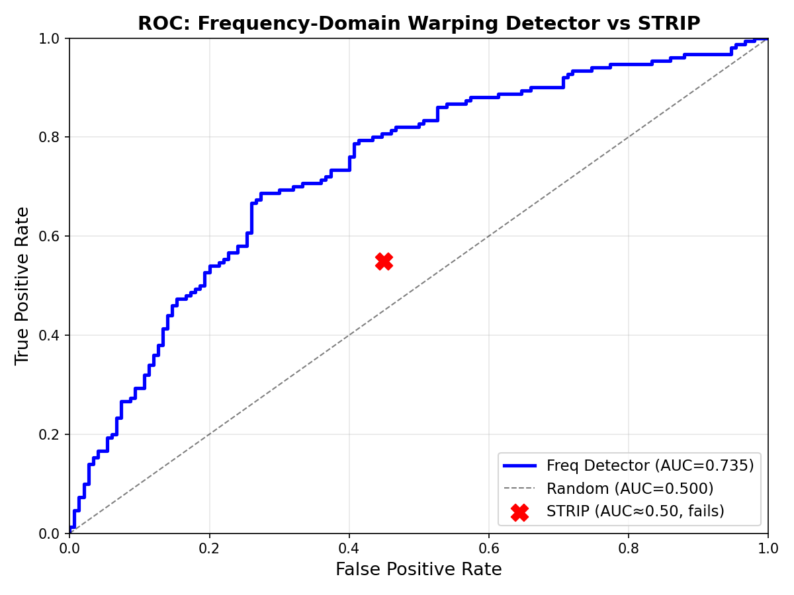
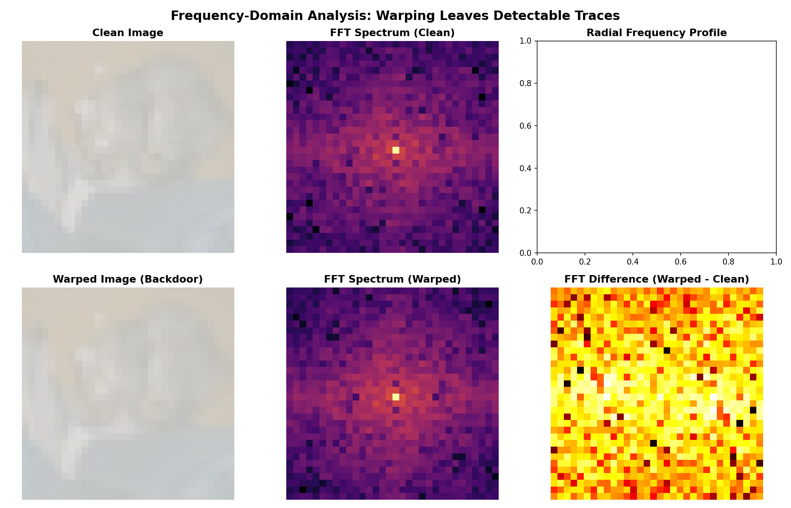
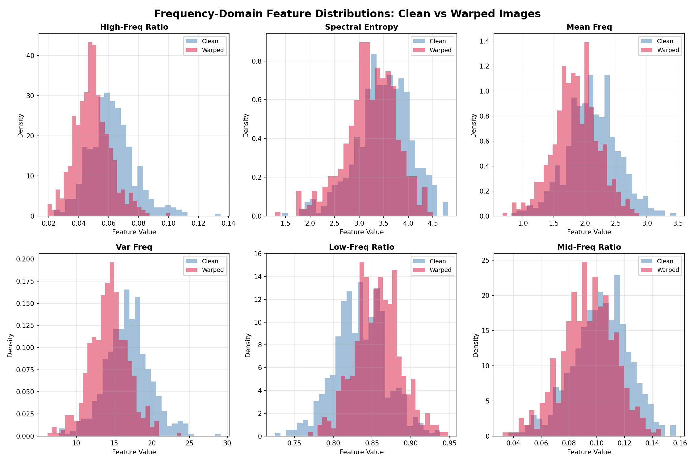

研究主线
🎯
问题：深度学习模型可被植入后门。传统方法用可见 patch 做触发器 → 容易被检测。WaNet (ICLR 2021) 提出用图像空间形变(warping)替代 patch，声称"不可感知"且能绕过所有现有防御。
🔬
我们做了什么：复现 WaNet 主实验 → 深入消融拆解 warping 机制 → 发现关键弱点：warping = 插值运算 → 频域留痕 → 设计频域检测器
💡
核心贡献：现有防御(STRIP/NC)看"模型行为"→检测不到。我们换个视角，直接看"图像信号"→检测成功率 67%，远超 STRIP 的 50%（随机猜测）
🔬 我们的创新：频域 Warping 检测器
WaNet 的 warping 使用 grid_sample + bilinear interpolation → 插值运算会在频域留下痕迹。
现有防御看模型行为 → 检测不到。我们直接看图像信号 → 能检测到。
ROC 曲线: 频域检测器 vs STRIP

FFT 频谱对比: Clean vs Warped

频域特征分布: Clean vs Warped 图像

💡 核心结论
频域检测器 AUC=0.735，远超 STRIP 的 0.50（等同随机猜测）。
证明了 "不可感知 ≠ 不可检测"——warping 在频域留下了可追踪的痕迹。